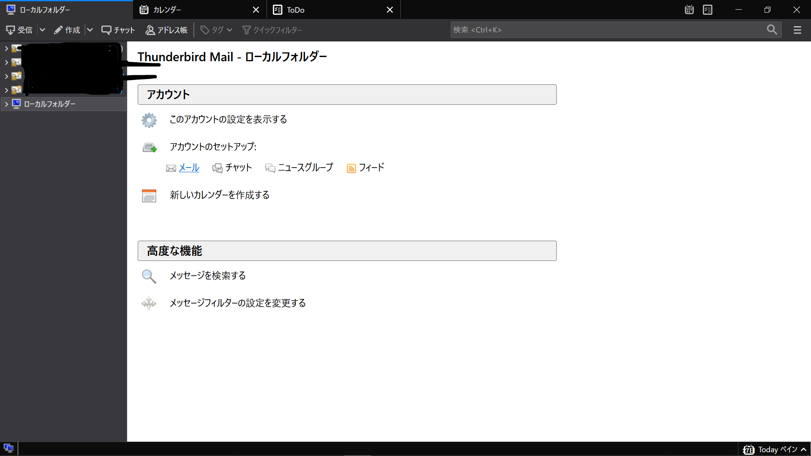
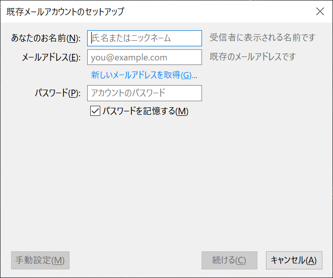
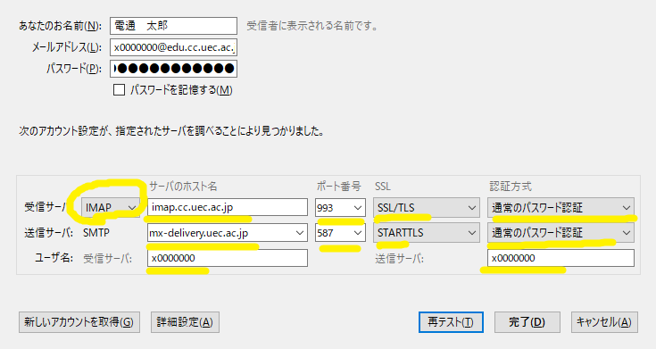

Lunatic電通生もっちゃんの部屋
STEP 6 大学メールを受信できるようにする
いろいろな方法がありますが、一番オーソドックスな方法で進めます。このほかの方法は各自調べてください。（最低限使えるようにする手順なので、簡略化にご協力ください）
32bit版・64bit版両方に対応したThunderbirdのダウンロードは、こちらから、中央の「無料でダウンロード」を選択し、「保存」してください。
64bit版をインストールしたいかたは、こちらからでも大丈夫です。
どちらも「実行」を選択したら、セキュリティ画面がでます。「はい」をおしてください。そして、特にこだわりが無ければ、「Ok」「次へ」などをおして、インストールしましょう。

起動したら、左の「ローカルフォルダ」を選択、「アカウント」の「アカウントセットアップ」、「メール」を選択してください（初回起動の人は「メールアカウントを設定する」も選択してください。）
以下の情報を入力してください。
- 「あなたのお名前」には「本名」をいれてください（相手の受信者欄に表示されます）
- 「メールアドレス」には「x20xxxxx（UECアカウント）@edu.cc.uec.ac.jp」と入力してください。
- 「パスワード」には、UECアカウントのパスワードを入力してください。
どんなに頑張っても、接続することができません。そこで、「手動設定」をクリックします。
たくさん情報が出てきます。以下の通りに設定してください。
- 「受信サーバー」は「imap」に設定してください。
- 「受信サーバー・サーバーのホスト名」は「
imap.cc.uec.ac.jp」と入力してください。 - 「受信サーバー・ポート番号」は、「
993」と入力してください。 - 「受信サーバー・SSL」は「SSL/TLS」を選択してください。
- 「受信サーバー・認証方式」は「通常のパスワード認証」を選択してください。
- 「送信サーバー・サーバーのホスト名」は「
mx-delivery.uec.ac.jp」と入力してください。 - 「送信サーバー・ポート番号」は、「
587」と入力してください。 - 「送信サーバー・SSL」は「STARTTLS」もしくは「TLS」を選択してください。
- 「送信サーバー・認証方式」は「通常のパスワード認証」を選択してください。
- 「ユーザー名」はどちらも「UECアカウント」を入力してください。
他のデバイスの設定はこちらを参考にしてください。
Next -> STEP 7 誓約書など